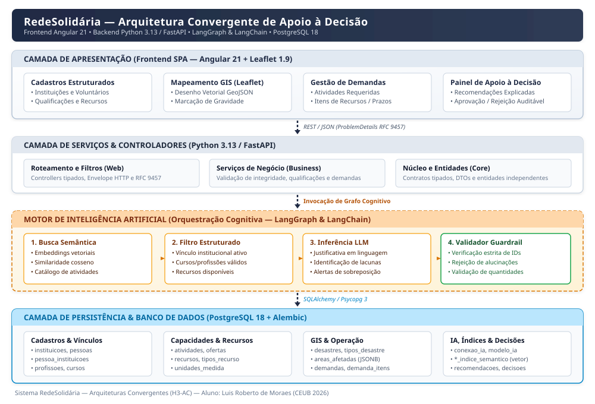
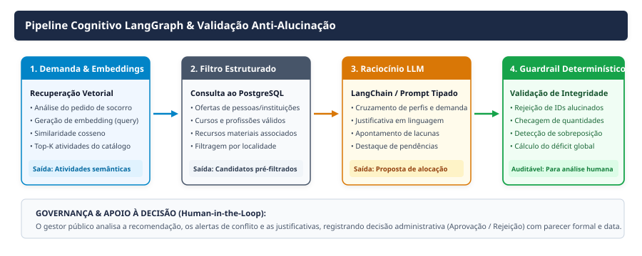
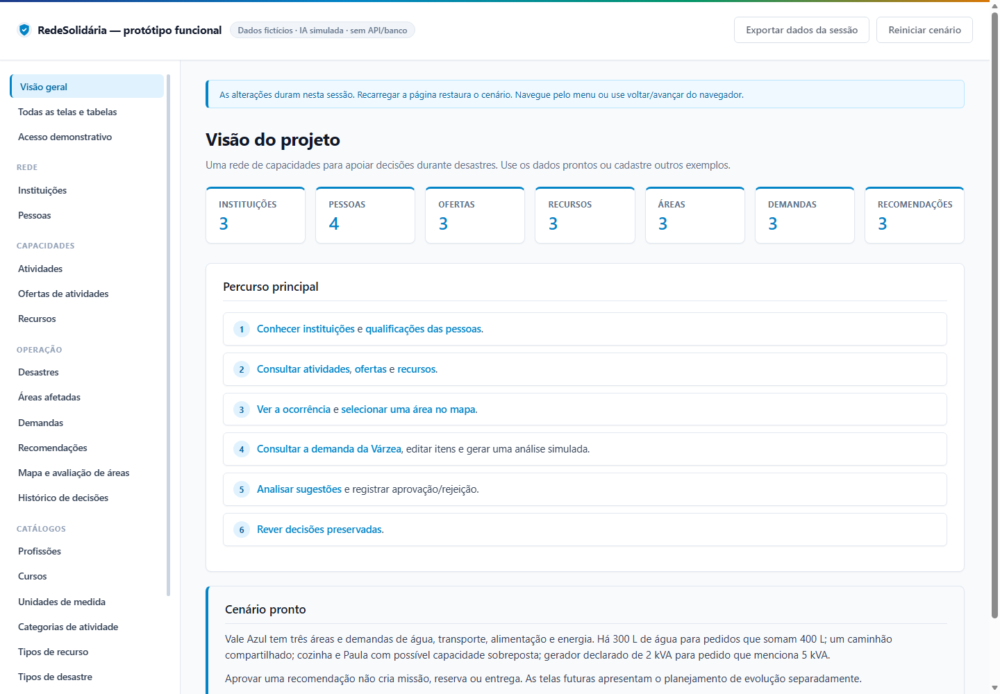
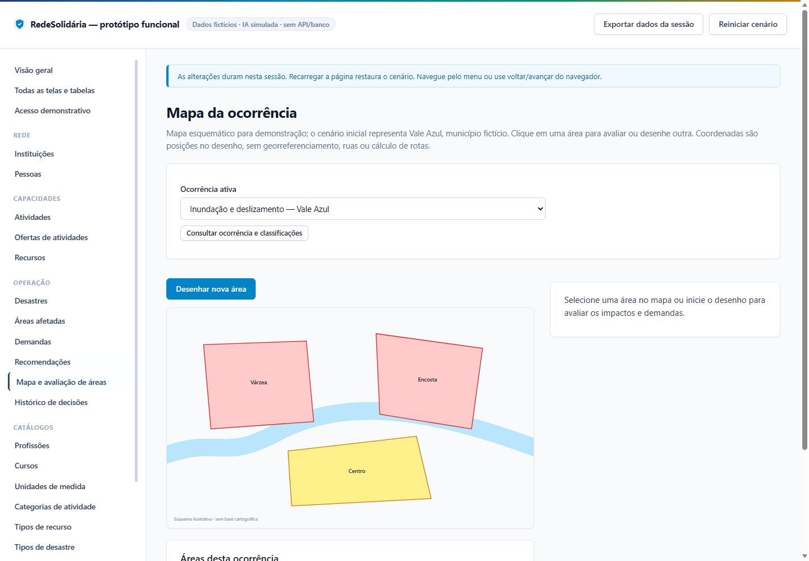
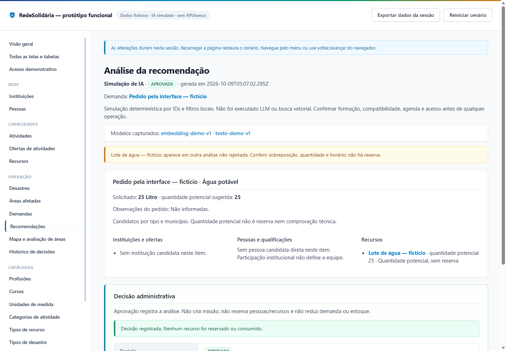

Este documento consolida a entrega da atividade de Sistematização da disciplina H3-AC — Arquiteturas Convergentes do Centro Universitário de Brasília (CEUB), sob a temática Desafio de Computação Aplicada à Proteção e Defesa Civil.
O Brasil vivencia uma escalada na frequência e severidade de eventos climáticos extremos. Desastres hidrológicos (inundações bruscas e alagamentos) e geológicos (deslizamentos de terra em encostas urbanas) impõem desafios humanitários e logísticos sem precedentes à administração pública. Em conformidade com o edital de Sistematização, o diagnóstico do problema é estruturado a partir de quatro questões fundamentais.
Durante desastres deflagrados por chuvas torrenciais ou secas severas, observa-se uma comoção pública espontânea acompanhada pela mobilização voluntária de centenas de cidadãos, empresas e organizações da sociedade civil. No entanto, o ecossistema de resposta da Defesa Civil padece de uma crônica fragmentação de dados e desarticulação operacional:
A desorganização das capacidades atinge múltiplos atores no cenário de emergência:
Este gargalo é recorrente em todo o território nacional, tendo sido registrado criticamente em tragédias emblemáticas recentes:
Para fins de experimentação controlada e validação rigorosa dos modelos de dados implementados no projeto, adotou-se como cenário piloto o município de São Paulo (código IBGE 3550308), representativo de uma localidade brasileira densamente povoada e vulnerável, com uma ocorrência ilustrativa contendo três setores críticos: a Várzea (área baixa inundável), a Encosta (área íngreme suscetível a escorregamentos de encosta) e o Centro (ponto de concentração de abrigados e apoio logístico).
A Ciência da Computação oferece respostas definitivas para superar o gargalo da gestão de emergências por meio da convergência tecnológica:
O Plano Nacional de Proteção e Defesa Civil (PN-PDC 2025–2035), instituído no âmbito da Política Nacional de Proteção e Defesa Civil (Lei nº 12.608/2012 e Decreto nº 12.652/2025), estrutura-se em 5 eixos temáticos, 20 objetivos estratégicos e 163 metas com horizontes temporais bem definidos.
O projeto RedeSolidária materializa uma contribuição técnica e acadêmica direta para viabilizar os fundamentos computacionais da Meta 3.1.3. O recorte de modelagem exige a adesão estrita ao qualificativo "institucionais": cada voluntário cadastrado vincula-se formalmente a uma instituição (ONG, universidade, entidade de classe, cooperativa ou órgão público), garantindo lastro jurídico, validação de competências e coordenação articulada em rede.
A RedeSolidária é uma plataforma computacional full-stack convergente, orientada a microsserviços e apoio à tomada de decisão. A aplicação integra módulos de cadastros auditáveis, Sistema de Informação Geográfica (GIS), motor cognitivo com Inteligência Artificial generativa e orquestração de fluxos estruturados.
| Etapa | Fluxo de Dados & Operações | Módulos e Tecnologias |
|---|---|---|
| Entrada |
• Cadastramento de instituições e pessoas com vínculos formais; • Registro de qualificações (profissões e cursos técnicos validados); • Catálogo de atividades padronizadas e ofertas de capacidades; • Inventário de recursos materiais, veículos e geradores; • Desenho vetorial de áreas afetadas no mapa com níveis de gravidade; • Registro de demandas emergenciais com itens quantitativos e prazos. |
Angular 21 (SPA responsiva) Leaflet 1.9 (Polígonos GeoJSON) FastAPI / Pydantic (Validação tipada) |
| Processamento |
• Verificação de integridade referencial e contratos no backend; • Geração de embeddings vetoriais para demandas e catálogo de atividades; • Busca vetorial de similaridade por cosseno em memória; • Filtragem relacional no PostgreSQL (vínculos ativos, diplomas e locais); • Invocação de grafo LangGraph para orquestração cognitiva; • Raciocínio LLM (LangChain) para formulação de justificativas contextuais; • Guardrail determinístico: checagem de IDs reais e cálculo de déficits/sobreposições. |
Python 3.13 / FastAPI PostgreSQL 18 / SQLAlchemy LangGraph / LangChain Trigger SQL (Dimensões de vetores) |
| Saída |
• Mapa interativo com polígonos coloridos por gravidade da ocorrência; • Dossiê de recomendação com candidatos sugeridos e justificativa textual; • Alertas explícitos de conflitos de agenda, cursos vencidos e déficits materiais; • Histórico auditável de decisões administrativas (Aprovação / Rejeição) com justificativa formal do gestor público. |
Frontend Angular 21 Histórico em PostgreSQL (audit) Logs padronizados RFC 9457 |
Uma premissa de engenharia fundamental adotada no projeto é que a Inteligência Artificial não substitui a autoridade do gestor público de Defesa Civil. O sistema atua estritamente como um sistema de apoio à decisão (Decision Support System - DSS). O motor cognitivo elabora propostas fundamentadas, mas a decisão final de mobilização cabe indelevelmente ao administrador da sala de crise.
A aprovação administrativa registra a análise no banco com carimbo de tempo (timestamp) e identificação do gestor; ela não cria missões automáticas, não bloqueia estoques sem confirmação humana e não efetua despachos autônomos, preservando a segurança operacional e a transparência pública.
O backend foi desenhado seguindo princípios de arquitetura limpa e inversão de dependências, garantindo que o núcleo do domínio permaneça desacoplado de bibliotecas de infraestrutura:
core/: Entidades centrais do domínio, definições de envelopes de resposta HTTP e tipos fundamentais. Não possui qualquer dependência de camadas superiores.infra/: Mecanismos de persistência, conexão com o banco de dados PostgreSQL 18 via SQLAlchemy 2.1 e psycopg 3, mapeamento relacional (ORM) e migrações versionadas com Alembic.business/: Serviços de aplicação, regras de negócio, validações de integridade, modelos de entrada/saída (DTOs/ViewModels) e o módulo business/graphs responsável pela orquestração do LangGraph.web/: Controladores REST (FastAPI), middlewares de exceção global conforme RFC 9457 (ProblemDetails), filtros transversais e inicialização da aplicação (main.py).A representação visual a seguir ilustra a convergência entre as quatro camadas lógicas, os componentes de software e o fluxo bidirecional de dados:

O escopo inicial do projeto foi formalizado e implementado com 29 tabelas relacionais, contemplando migrações versionadas (Alembic 0001 a 0009):
instituicoes, pessoas, pessoa_instituicoes (vínculo institucional com cargo/função).profissoes, cursos, pessoa_profissoes, pessoa_cursos (com data de emissão, validade e comprovação).categorias_atividade, atividades, ofertas_atividades (capacidade declarada por pessoa ou instituição), unidades_medida.tipos_recurso, recursos (especificações e quantidades), recurso_oferta.desastres, tipos_desastre, desastre_tipo, areas_afetadas (armazena polígonos GeoJSON em coluna JSONB, gravidade e última avaliação).demandas, demanda_itens (relacionados a atividades requeridas ou tipos de recursos, quantidades e prioridades).conexao_ia (credenciais e chaves criptografadas), modelo_ia (registro de modelos para embedding e inferência), atividade_indice_semantico (vetores double precision[] com triggers de dimensão), profissao_indice_semantico, curso_indice_semantico, tipo_recurso_indice_semantico.recomendacoes, recomendacao_itens, recomendacao_pessoas, recomendacao_instituicoes, recomendacao_recursos, recomendacao_decisoes (registro histórico imutável).O edital estabelece a exigência de convergência de pelo menos 3 componentes tecnológicos estruturados. A solução RedeSolidária articula quatro componentes tecnológicos de ponta, demonstrando clara sinergia onde cada tecnologia resolve um desafio específico da operação de defesa civil.
| Componente Tecnológico | Stack & Versões | Problema Específico que Resolve na Arquitetura |
|---|---|---|
| 1. Frontend Web SPA & Geoprocessamento | Angular 21.2 Leaflet 1.9 OpenStreetMap |
Resolve a ausência de interface amigável e visualização espacial nas salas de crise. Permite aos agentes desenhar zonas de risco (polígonos vetoriais) diretamente no mapa, acompanhar níveis de gravidade por cores e operar cadastros complexos com validação reativa e design ergonômico. |
| 2. Backend & Engenharia de Serviços | Python 3.13 FastAPI 0.143 SQLAlchemy 2.1 Pydantic / TypedDict |
Resolve a fragilidade e inconsistência de dados das planilhas manuais. Provê uma API assíncrona de alto desempenho, contratos fortemente tipados, validação rigorosa de regras de negócio em tempo de execução e mensagens padronizadas de erro (RFC 9457). |
| 3. Banco de Dados Relacional e Georreferenciado | PostgreSQL 18 Alembic 1.20 JSONB & Array Float |
Resolve o problema da dispersão, duplicidade e perda de histórico de cadastros. Assegura integridade referencial estrita entre 29 tabelas, versionamento auditável de esquemas via migrações Alembic e armazenamento integrado de geometrias GeoJSON e vetores de embedding. |
| 4. Inteligência Artificial & Orquestração Cognitiva | LangGraph 1.2 LangChain 1.4 Embeddings Cosseno LLM com Guardrails |
Resolve o gargalo cognitivo de cruzar centenas de chamados não-estruturados com voluntários e recursos. Realiza busca semântica veloz, balanceia ofertas, redige justificativas compreensíveis em português e filtra alucinações via guardrails determinísticos. |
Para assegurar total controle sobre o fluxo de raciocínio da IA e impedir respostas caóticas, a recuperação e recomendação foram modeladas como um grafo acíclico dirigido (DAG) utilizando LangGraph, segregado em business/graphs:

As demandas cadastradas pela Defesa Civil nem sempre utilizam os termos formais do catálogo de atividades. Por exemplo, um pedido textual contendo "resgate de família ilhada com água na altura do peito" precisa ser associado à atividade oficial "Socorro e evacuação náutica em inundações". Para isso:
atividade_indice_semantico com hash de integridade (SHA-256). Caso o texto descritivo seja alterado, o índice é automaticamente invalidado.Modelos de linguagem generativos (LLMs) são naturalmente probabilísticos e suscetíveis a alucinações (criação de identificadores inexistentes ou promessas de recursos fictícios). No RedeSolidária, a saída do LLM é submetida a um nó validador estrito de engenharia:
A aplicação foi integralmente prototipada e integrada, contando com visual moderno, tema azul corporativo e navegação intuitiva em Angular.

O percurso da operação na interface conduz o usuário por seis etapas fluídas:


Para assegurar que o modelo conceitual e as regras de negócio atendem perfeitamente aos requisitos antes da entrada em produção plena, foi implementado um conjunto exaustivo de testes e simulações em memória (simulacoes/escopo_inicial/simular_desastre.py).
A execução do script gerou o relatório técnico oficial comprovando 54 verificações OK, 0 falhas e 8 limites devidamente documentados:
| Grupo de Teste | Quantidade | Resultado | Evidência de Validação |
|---|---|---|---|
| Validação Cadastral e Relações | 6 cenários | 54 / 54 OK | Vínculos institucionais, qualificações, modelos e entidades conferidos com rigor. |
| Rejeição de Entradas Inválidas | 18 cenários | Aprovado | Rejeição de demandas sem itens, quantidades negativas, prazos retroativos e FKs inexistentes. |
| Integridade Semântica e Dimensões | 10 cenários | Aprovado | Rejeição de vetores de dimensão incompatível, invalidação de hashes obsoletos e coexistência de modelos. |
| Guardrails Anti-Alucinação | 12 cenários | Aprovado | Descarte imediato de IDs de pessoas, instituições e recursos inexistentes sugeridos por IA. |
| Histórico e Decisão Administrativa | 8 cenários | Aprovado | Preservação de decisões anteriores, imutabilidade do histórico e integridade de estoques. |
O edital exige a definição de pelo menos um indicador mensurável que comprove a eficácia da solução proposta, distinguindo-o claramente do indicador oficial da meta do PN-PDC.
A mensuração do indicador é conduzida mediante um protocolo experimental comparativo estruturado:
A fórmula matemática para o cálculo da redução percentual é dada por:
Reducao_Tempo (%) = [ (Tempo_Medio_Manual - Tempo_Medio_Assistido) / Tempo_Medio_Manual ] * 100
Para garantir que o ganho de velocidade não ocorra às custas da qualidade e segurança da operação, estabeleceu-se um indicador de controle complementar:
A operacionalização da plataforma RedeSolidária proporciona impactos positivos tangíveis para todo o ecossistema de gestão de desastres:
| Limitação ou Risco Identificado | Impacto Potencial na Operação | Estratégia de Mitigação Adotada / Prevista |
|---|---|---|
| 1. Queda de Conectividade em Área de Desastre | Interrupção das comunicações celulares e satelitais na zona de impacto, impedindo o acesso à API em nuvem. | A primeira entrega opera centralizada na sala de situação municipal (que conta com gerador e link redundante). A arquitetura prevê evolução com PWA offline e cache local para sincronização posterior. |
| 2. Alucinação de Modelos de IA Generativa | O modelo de linguagem propor voluntários inexistentes, alterar quantidades de estoques ou inferir qualificações não comprovadas. | Implementação de Guardrail Determinístico no nó pós-LLM do LangGraph. Todos os IDs e quantidades são validados rigidamente contra o PostgreSQL; dados desconhecidos são descartados. |
| 3. Desatualização de Dados Cadastrais | Voluntário ter mudado de cidade, telefone desatualizado ou curso de socorrista ter expirado após o cadastro. | O modelo de dados implementado vincula a oferta a certificados com data de expiração e impõe vínculo institucional obrigatório (Meta 3.1.3), delegando às instituições a revalidação periódica de seus quadros. |
| 4. Desafio Topológico e Acesso Físico | A recomendação indicar um recurso geograficamente próximo em linha reta, mas cujo acesso viário está bloqueado por enchente. | A primeira entrega atua como apoio à decisão e explicita que a proximidade vetorial não garante tráfego seguro. A evolução futura integrará camadas de bloqueio viário em PostGIS e análise de rotas seguras. |
| 5. Autenticação em Modo de Demonstração | O emissor rápido de token administrativo (endpoint /api/v1/autenticacao/token-admin, sem trava de ambiente) gera acesso administrativo sem login federado. | Recurso destinado exclusivamente a testes e à demonstração acadêmica desta entrega — não será levado a produção. A versão produtiva substituirá o emissor por autenticação federada com perfis granulares (coordenador, instituição e voluntário), com emissão restrita ao ambiente de desenvolvimento. |
Em conformidade com a Seção 11 do edital, foi elaborado um roteiro de apresentação em vídeo com duração estrita de até 5 minutos, estruturado para responder obrigatoriamente às 5 perguntas essenciais:
| Tempo | Pergunta Obrigatória | Conteúdo e Telas a Projetar |
|---|---|---|
| 00:00 - 00:30 | Abertura e Identificação | Apresentação do aluno Luis Roberto de Moraes, disciplina Arquiteturas Convergentes (CEUB) e introdução ao projeto RedeSolidária. |
| 00:30 - 01:25 | 1. Qual é o problema? | Exposição da desorganização das capacidades em desastres climáticos, planilhas dispersas, voluntários enviados sem qualificação comprovada e gargalos críticos de tempo nas salas de situação. |
| 01:25 - 02:10 | 2. Qual meta do PN-PDC está sendo trabalhada? | Apresentação da Meta 3.1.3 ("Criar cadastro nacional de voluntários institucionais para formar rede para atuar na resposta a desastres"), vinculada ao Objetivo 3.1 e Eixo Resposta (prazo 2031). |
| 02:10 - 03:05 | 3. Como a Computação contribui para atingir essa meta? | Convergência Tecnológica: Angular + Leaflet (mapa interativo), Python/FastAPI (engenharia de dados e integridade), PostgreSQL (cadastro relacional seguro) e LangGraph/LangChain (busca semântica e IA explicada). |
| 03:05 - 04:15 | 4. Como a solução funciona? | Demonstração em vídeo do protótipo funcional: delimitação de área inundada no mapa, cadastro de demanda urgente, recomendação inteligente da IA com justificativas e decisão administrativa humana. |
| 04:15 - 04:50 | 5. Como será medido o resultado? | Indicador mensurável: Redução de 50% no tempo médio de triagem de equipes com pertinência de pelo menos 95% das sugestões validadas por guardrails determinísticos (54 testes OK). |
| 04:50 - 05:00 | Encerramento | Fechamento acadêmico, impacto humanitário e agradecimentos. |
O desenvolvimento da plataforma RedeSolidária demonstrou como conceitos fundamentais de Ciência da Computação e arquiteturas de software modernas podem transformar necessidades críticas de Proteção e Defesa Civil em soluções estruturadas, seguras e mensuráveis.
Ao conectar a Meta 3.1.3 do PN-PDC 2025–2035 à convergência entre geoprocessamento vetorial, microsserviços fortemente tipados e inteligência artificial governada por grafos cognitivos com guardrails determinísticos, o projeto supera os riscos de alucinação de modelos genéricos e oferece aos coordenadores públicos uma ferramenta confiável de apoio à decisão.
Como horizonte de evolução futura para além do escopo de apoio à decisão, estão mapeadas a incorporação de extensões espaciais PostGIS para cálculo de rotas seguras de evacuação, despacho telemático de viaturas e missões em tempo real, e a implementação de módulos progressivos offline para trabalho de campo em cenários com colapso de infraestrutura de conectividade.